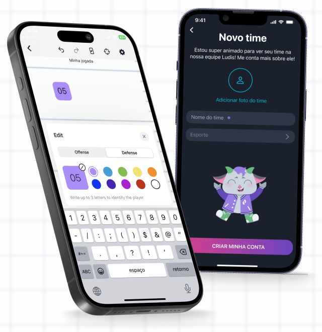
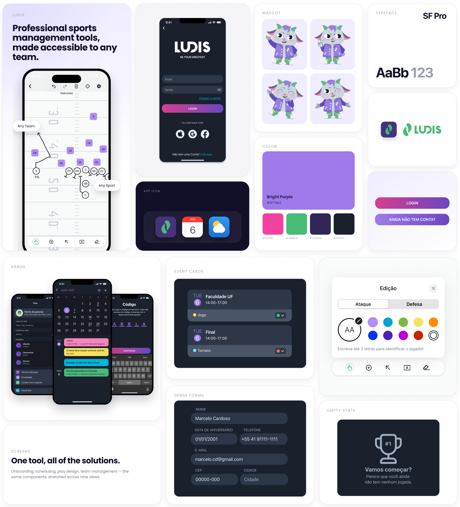
Team of three · one developer, two designers.
Owned research, wireframing, usability testing, and launch strategy.
The design system was led
by Natalia Da Rosa
Benchmarking, interview scripts, usability testing.
Low-to-high fidelity wireframes and flows, in Figma, against Apple's HIG
Launch strategy, three paid campaigns, and promotional content
Apple's CBL (Challenge Based Learning)
A three-phase framework connecting problem definition, research, and execution.
Understanding who we were building for.
Turning insight into product.
Youth and amateur sports teams struggle to organise training, matches, and team data — and the tools available don't fit them. Existing sports management apps tend to be inaccessible, expensive, or built for a narrow slice of the market, which leaves most coaches without a real option — especially the ones also acting as team managers, juggling both roles with no tooling built for that reality.
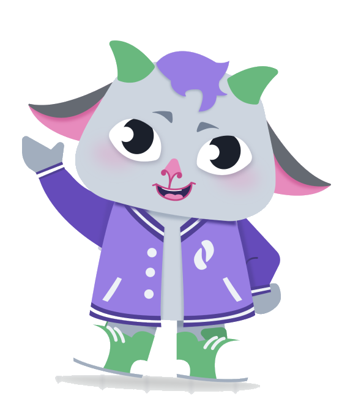
Primary user: coaches and sports teachers, often with little to no formal management experience
Secondary user: athletes and team members, typically younger.
UX shaped Ludis from day one — research fed directly into wireframes, taken from low to high fidelity, refined through user flows built jointly by designers and developers, and grounded throughout in Apple's Human Interface Guidelines.
The original vision for Ludis was broad — scheduling, communication, and performance tracking across any sport. After our first round of validation, we decided that reducing our scope would be the best option given the time we had and the goals we still wanted to achieve.
We scoped the MVP down to one main feature: the play-drawing playbook.
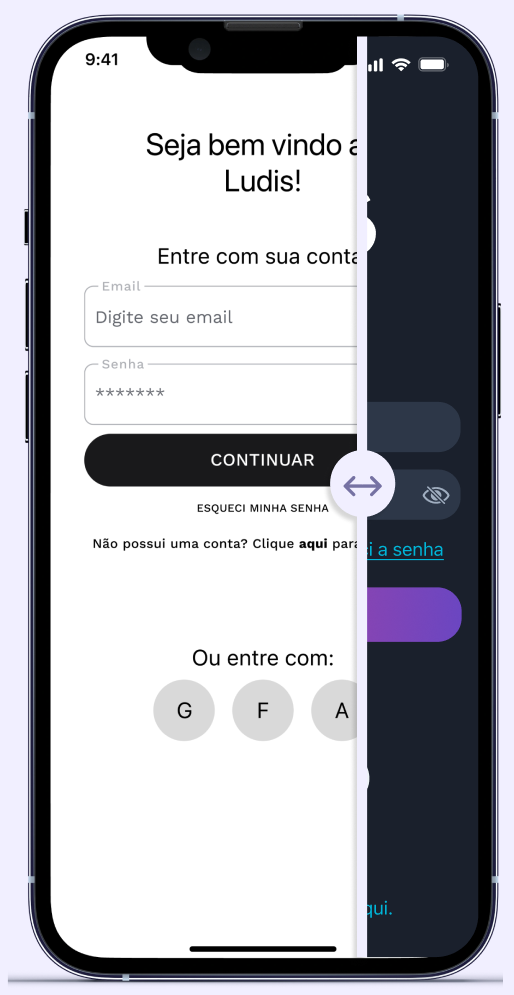
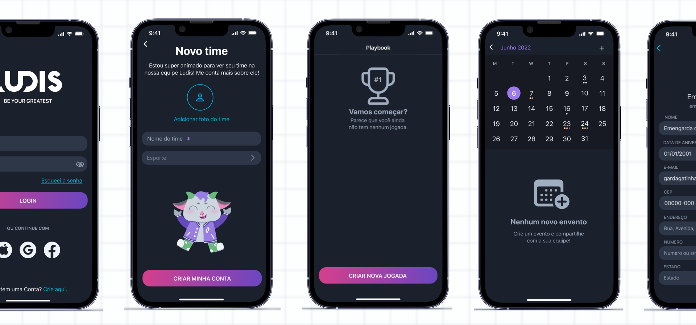
We ran a moderated usability test with the same initial users, then returned to that feedback for a second round of iteration. Ease of use scored 5/5, likelihood to recommend scored 5/5 — and the session surfaced real gaps we shipped before release:
Multi-Sport Templates
Added soccer, volleyball, and basketball
Custom Backgrounds
Added the ability to upload images to serve as custom backgrounds
Offline & Export
Allowed users to save locally, with shareable images or PDFs
This wasn't just fixing friction — it was expanding the product in the direction users actually asked for, based on evidence instead of assumption. Bellow, you can find the interview protocol we used for our validation process.
view interview protocolLogin & team setup → Playbook list → Play-drawing canvas: choose a template for your sport (football, soccer, or volleyball) or a custom background, add players with role-based symbols (shape, not just colour, for accessibility), draw routes with directional lines, and save to a reusable playbook — available offline, with export to image or PDF for sharing on the field.
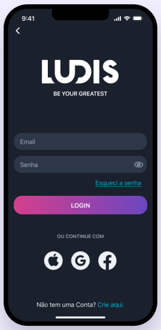
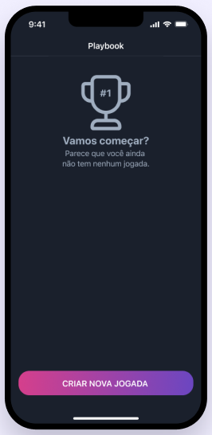
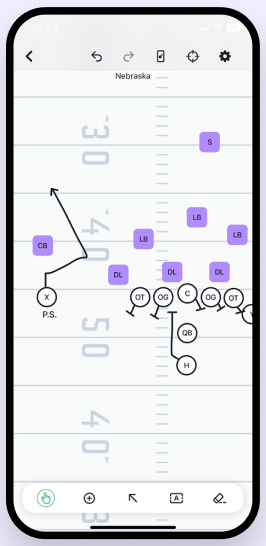
LUDIS launched successfully and served its community goal, built through a user-focused, metric-driven process. But our research only ever confirmed us — it never pushed back. What looked like validation then reads now as a blind spot: research that can't contradict you isn't testing your assumptions, it's just recording them. Next time I'd design the study to be able to prove me wrong.
To learn more about our marketing and launch campaign, view my separate project on LUDIS' social media design.
view LUDIS' marketing project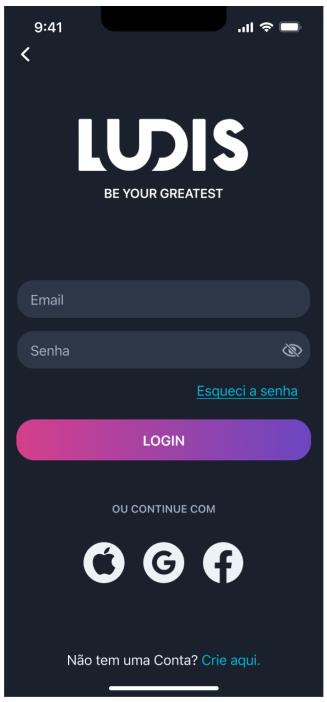
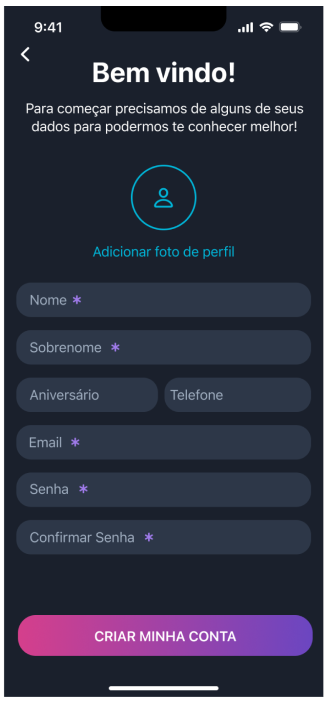
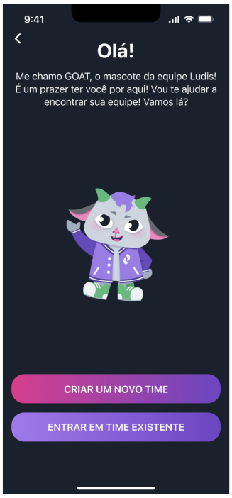
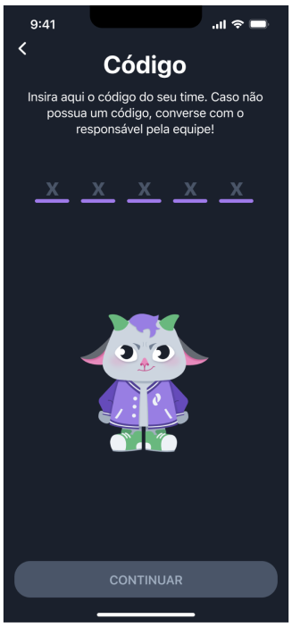
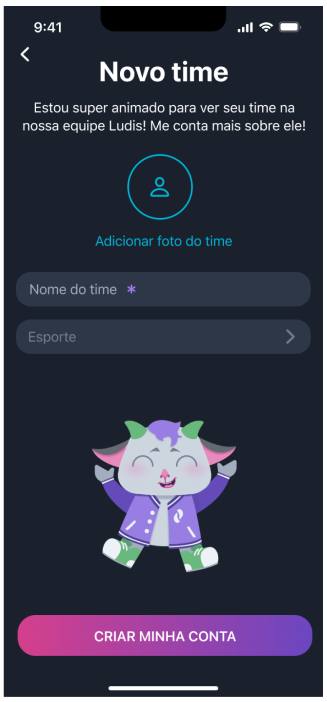
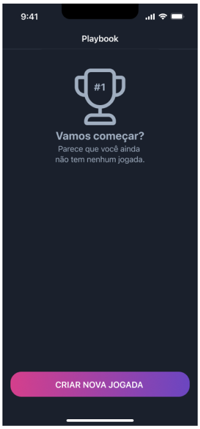
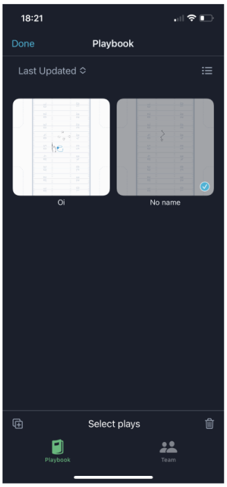
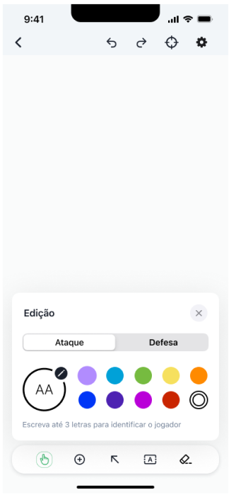
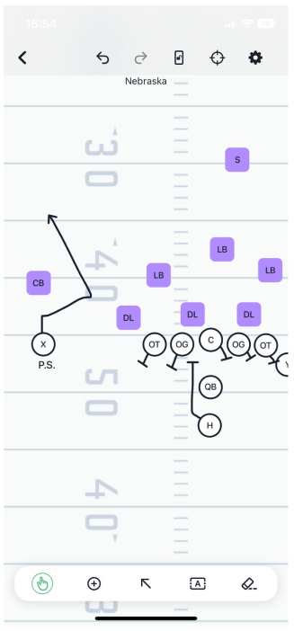
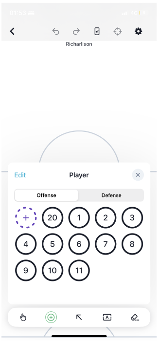
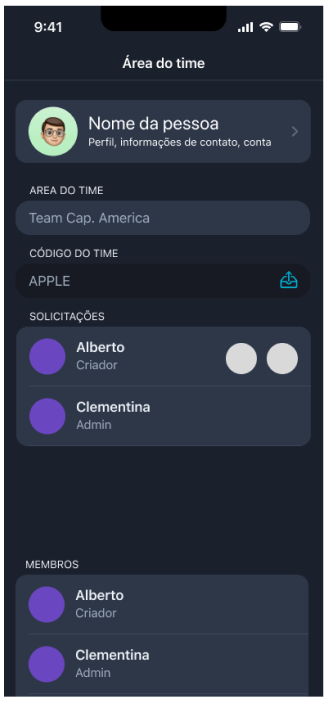
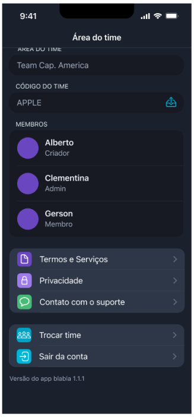
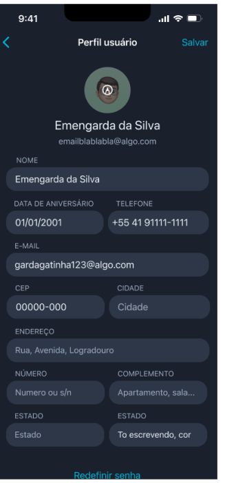
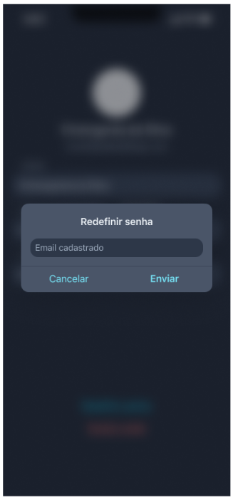
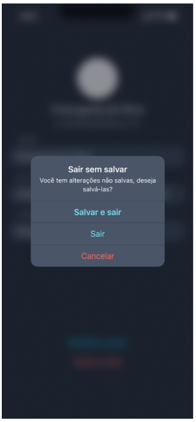
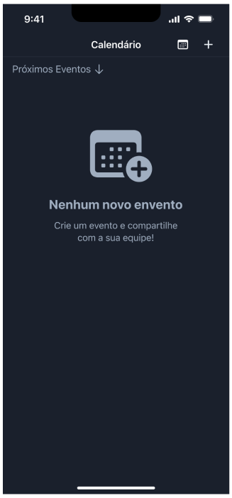
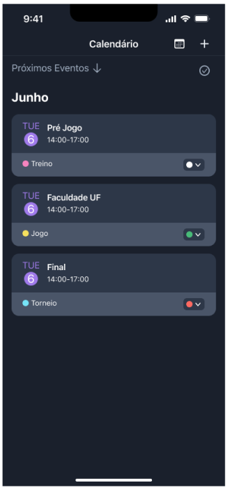
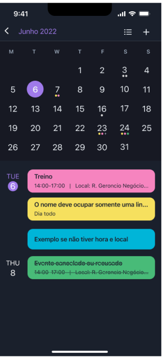
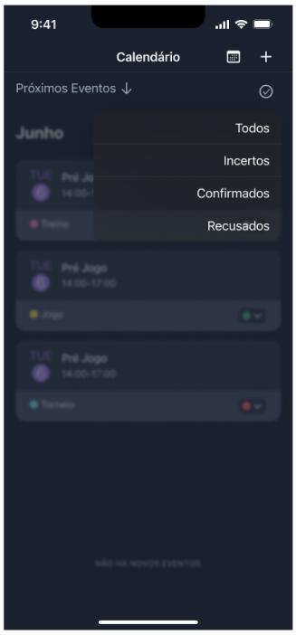
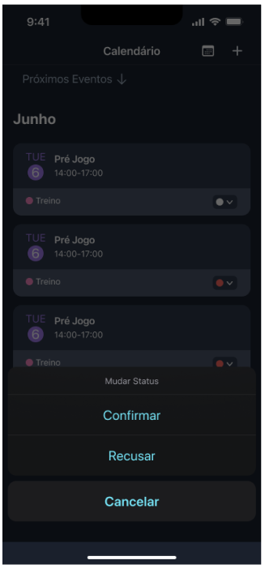